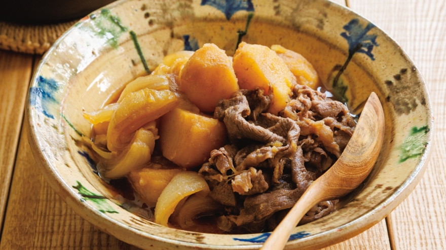

肉じゃが

盛りつけにひと工夫。じゃがいもと牛肉を皿の中で分けて盛れば、メインディッシュとして楽しめます。牛肉は仕上げに入れてサッと火を通せば、堅くなりません。
材料(4人分)
- じゃがいも4～5コ（600g）
- たまねぎ2コ（500g）
- 牛薄切り肉250g
- だしカップ1+1/2
[A]
- しょうゆ大さじ5～6
- 砂糖大さじ4～4+1/2
- みりん大さじ3
- 酒大さじ1
- サラダ油
つくり方
- じゃがいもは皮をむいて4等分に切り、水にさらして水けをよくきる。たまねぎは根元を残して八つ割りにする。
[ポイント] たまねぎは根元を付けたまま切ると、バラバラにならず、存在感が出る。
- 牛肉は大きければ半分に切る。
- 深めのフライパンにサラダ油大さじ1を中火で熱し、じゃがいもを入れる。周りが透き通るまで3～5分間よく炒める。じゃがいもがフライパンに張りつくようならサラダ油少々を足し、たまねぎを加えて軽く炒める。
- ３にだしと【A】を順に加え、落としぶたをして中火で10～15分間煮る。
- じゃがいもが柔らかくなったら、牛肉を広げながら加える。アクが出たら取り除き、牛肉に火が通ったら火を止め、そのまま少しおいて味を含ませる。
[ポイント]牛肉は余熱でも火が入るので、色が変わったらすぐに火を止める。
戻る